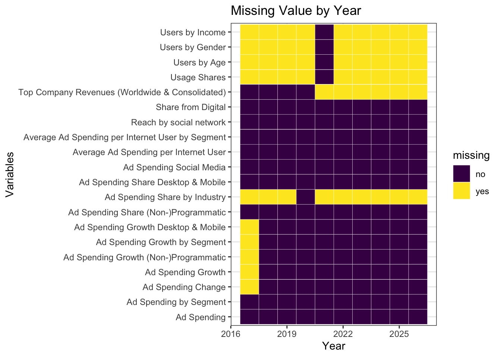
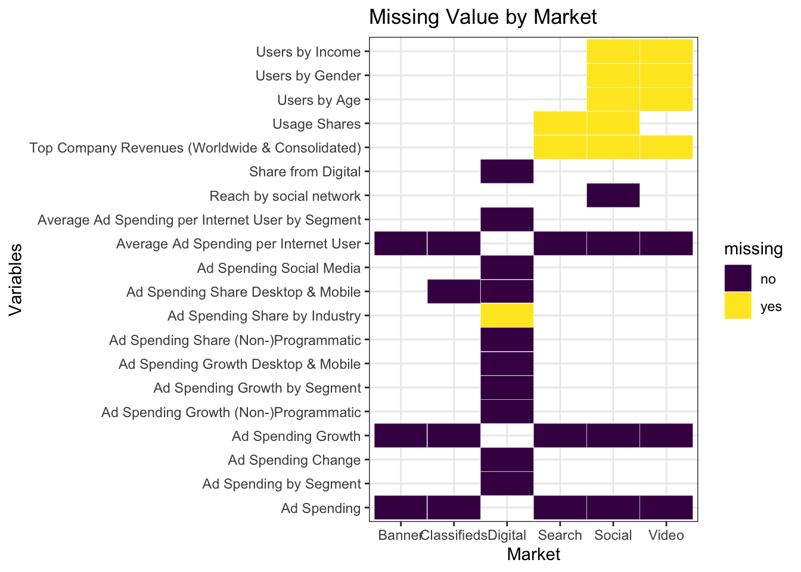

Chapter 4 Missing values
Missing Value Analysis:
Figure 1 
From Figure 1, we can see that users’ information(including Users by Income, Users by Gender, Users by Age, Usage Shares) is only available in 2021. This situation is reasonable because the original dataset is collected last year. The users’ information is inconstant and quickly changes over time, so it might be difficult to capture the previous users’ information and usage shares. In addition, the future data is also missing because there is only one-year data which couldn’t make any prediction about the future. For Top Company Revenues, as the original dataset was most recently updated in Nov 2021, statista hadn’t collected each company’s data for revenue which is usually published by the end of the year. Therefore, there is missing data from 2021 to 2026. We also notice that the data for Ad Spending share by industry is available only in 2020 and Ad Spending Growth including Desktop&Mobile, by segment, (Non-)Programmatic, and Ad Spending Change are all missing in 2017 data.
Figure 2 
From Figure 2, we are able to tell that for each market, Ad Spending, Ad Spending Growth, and Average Ad Spending per Internet User do not have any missing value. Digital Market is the generic term for all five markets. As we can see from Figure 2, it contains all the aggregated variables without any missing value except for Ad Spending Share by Industry which we know is only available in 2020 from Figure 1.
Missing values also exist in users’ information including Users by Income, Users by Gender, Users by Age, and Usage Shares, which are only available in 2021 as we know from Figure 1. For Top Company Revenues, we can see that only three markets(Search, Social, and Video) own the information of earnings, and it is missing for three markets because it is only provided until 2021.
Some unique variables only exist in a specific market, so for rest of the others will not contain the rows for those variables. For Social Advertising, it includes Reach by social network variable which provides us with the number of users for different social media.
For Classifields, it contains Ad Spending Share Desktop&Mobile with percentage for each. For other markets, they are all included in Digital Advertising and have specific spending amounts for Desktop and Mobile.
Those missing values are not essential for our further research. Therefore, we will not process them or delete any rows with missing data.